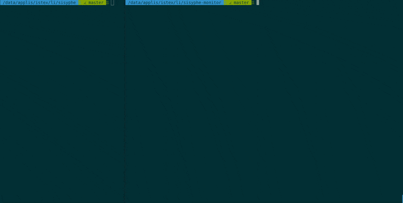

Sisyphe-monitor
Sisyphe-monitor is a front-end command line for the Sisyphe application. It displays information about the progress of the analysis.
Requirements
Test with NodeJS@8.1, Redis@3.2.6
Install it
- Download the lastest Sysiphe version and refer to the Readme to install it
- Download the lastest Sisyphe-monitor version
- Just do :
npm install - ... that's it.
Test
npm run test Will test sisyphe-monitor
Help
./app.js --help Will output help
Options
-V, --version output the version number
-r, --refresh <number> Rate to refresh interface (ms)
-u, --url <name> Define the remote to redis
-p, --prefix <name> Define the prefix for redis
-h, --help output usage informationHow it works ?
Just start Sisyphe-sisyphe like this:
npm start -- -p bull -r 1000 Prefix with bull and refresh every 1000ms on localhost
Sisyphe start and wait for keys in redis 